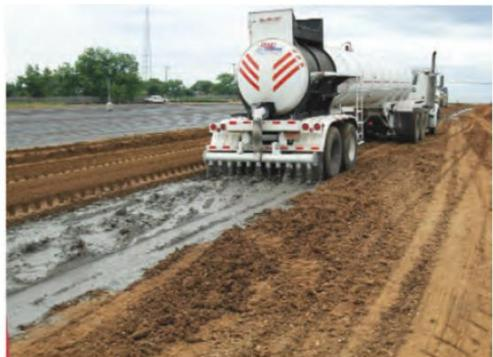
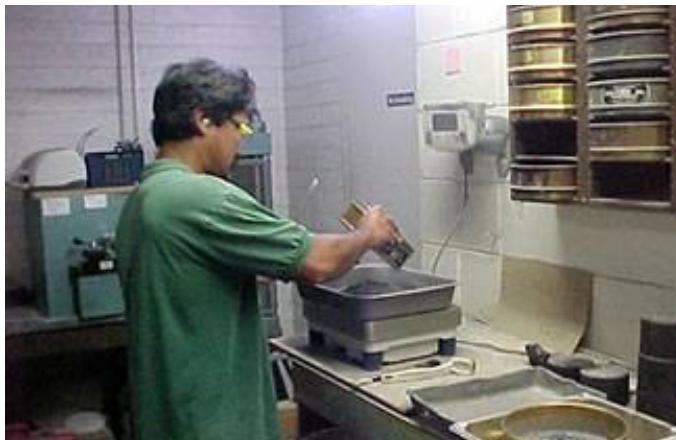
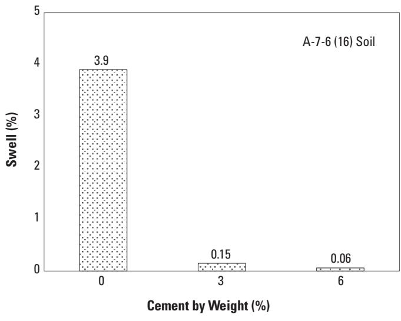
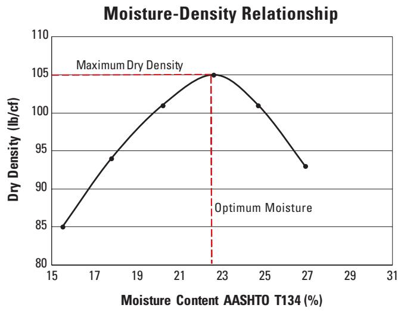
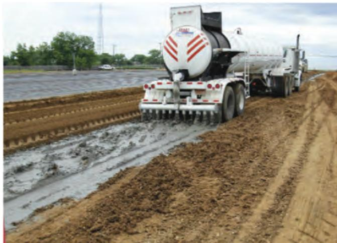
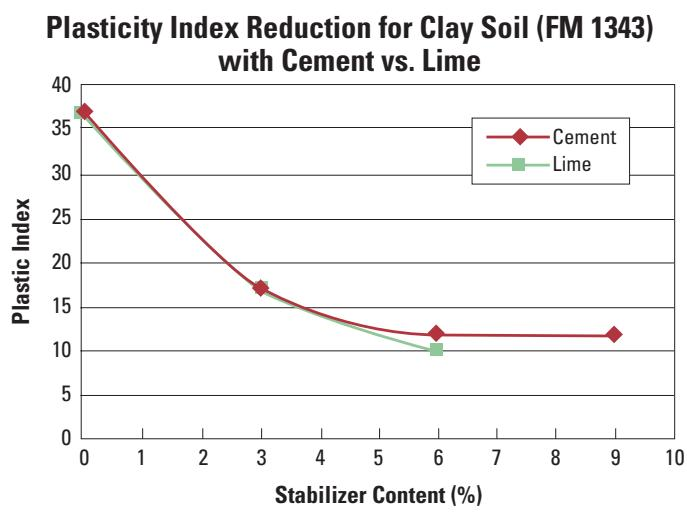
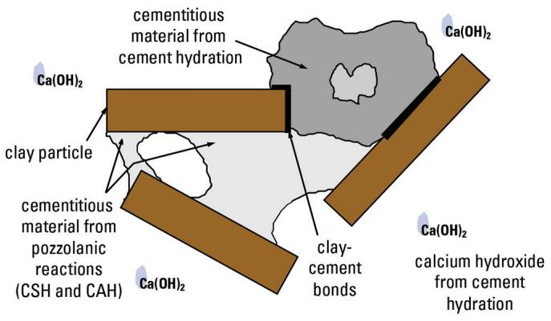
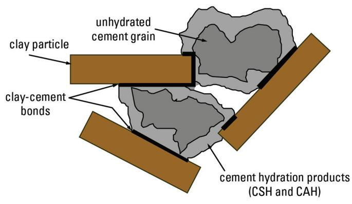

Cement-Stabilized Subgrade Strength Enhancement
Cement‑Stabilized Subgrade Strength Enhancement (CSS) is a ground‑improvement method that blends Portland cement—typically three to five percent of the dry soil weight—with fine‑grained subgrade soils such as clays or silts and then compacts the mixture into a dense, uniform layer [1][4]. The hydration of the cement chemically binds soil particles, consumes free water, lowers the Plastic Index to roughly 12–15, and raises unconfined compressive strength to at least 125 psi (often 100–300 psi), delivering a 100–300 % increase in stiffness and bearing capacity over untreated material [1][3]. Because the resulting semi‑bound matrix is less moisture‑sensitive, shrink‑/swell‑prone, and resistant to freeze‑thaw cycling, it provides a weather‑resistant work platform that supports both construction operations and long‑term pavement performance [5][6]
Sources (7)
Material purpose and applicability
Cement‑Stabilized Subgrade Strength Enhancement (CSS) is a ground‑improvement technique that mixes Portland cement into the existing subgrade soil—typically clayey or silty—and compacts the blend to form a uniform soil‑cement layer. The chemical hydration of the cement binds particles, reduces moisture content and plasticity, and creates a material whose stiffness and strength are markedly increased. By dosing the soil with cement at levels like four percent (about 38 lb/yd²), the unconfined compressive strength is raised to at least 125 psi (0.86 MPa), producing a 100–300 % increase over untreated material and thereby supplying the stability, stiffness, and load‑bearing capacity required for the pavement system. In addition, cement‑modified soils provide a weather‑resistant work platform for construction operations, supporting both the construction process and the long‑term performance of the overlying pavement. [1][3][4][5][6][7]
The figure below illustrates the mixing and compacting process used to create this stabilized layer.
 Compacting cement-stabilized subgrade [7]
Compacting cement-stabilized subgrade [7]
The image shows a large orange road roller with a smooth drum and rugged tires operating on a dirt surface. A driver is seated in the cab of the machine as it moves across the ground, which appears to be undergoing earthwork preparation. The caption identifies this activity as “Compacting cement-stabilized subgrade,” indicating that the roller is performing the mechanical compaction step of a ground-improvement technique.
[1] — Ch. 3 (p. 18); [3] — Ch. 2 (p. 30); [4] — Stabilized (Chemical) Subgrades (pp. 10–11); [5] — Benefits (p. 66), Materials (p. 67), Sustainability (p. 68); [6] — Ch. 4 (p. 315); [7] — Ch. 1 (pp. 12–17), Ch. 2 (pp. 18–20), Ch. 3 (p. 28), Ch. 4 (pp. 35–36), Ch. 5 (pp. 40–43), Ch. 6 (pp. 46–49), App. A (pp. 54–55)
The guides agree that cement‑stabilized subgrade strength enhancement is most appropriate for fine‑grained soils—specifically silts and clays with high plasticity, as well as clayey or silty granular materials classified under AASHTO A‑2‑6 or A‑2‑7—that are prone to instability at elevated moisture contents. In such soils cement “reduces shrink/swell potential and improves the stability of the clayey granular subgrade” and “partially bond[s] and realign[s] the silt, allowing the soil to be more effectively compacted with less effort.” The cement dosage is governed by water content, soil type and anticipated freeze‑thaw performance, with some specifications requiring a reduction of the Plastic Index to between 12 and 15 to achieve a “weather‑resistant construction platform.” When the native material does not fall into these fine‑grained or highly plastic categories, or when required performance exceeds what modest cement additions can provide, the guides recommend selecting an alternative stabilizer or structural layer. The sources do not prescribe specific traffic levels, climate zones beyond freeze‑thaw considerations, or exposure conditions for cement stabilization. [4][7]
[4] — Stabilized (Chemical) Subgrades (pp. 10–11); [7] — Ch. 2 (p. 19)
Composition and characteristics
Cement‑stabilized subgrade is formed by mixing the in‑place soil with binding agents such as Portland cement, lime, fly ash, or cement kiln dust; it may also consist of a blend of cement, pulverized asphalt and the existing base or subgrade soils—ranging from non‑plastic sands and silts to plastic clays—combined in a well‑graded mix with less than 20 % passing the No. 200 sieve. The material consists of the native fine‑grained subgrade soil—typically silts or clays with high plasticity—combined with a small proportion of Portland cement, usually about three to five percent of the dry soil weight, or about two to four percent by weight in other specifications. The cement content is kept low, generally four to six percent of the dry soil mass (about five percent for expansive clays), and water is added to achieve the optimum moisture content identified by standard moisture‑density testing. The mixture is pulverised with a reclaimer to a fine gradation so that “100 % of the material must pass a 1½‑inch sieve and at least 60 % must pass a No. 4 (4.75 mm) sieve,” ensuring a homogeneous, dense matrix. For the cement to bond effectively, the soil pH must be at least 4.0; sulfate levels should stay below about 3,000 ppm to avoid ettringite‑induced heave, and organic matter is limited to roughly two percent unless extra cement is added. During mixing, cement hydration chemically binds soil particles, forming a semi‑bound to bound matrix that behaves like an enhanced granular base while retaining the overall character of a soil; the cement reacts with the soil particles, binding them into small conglomerate masses and altering clay surface chemistry through cation exchange, which together lower plasticity and moisture sensitivity while raising the support strength (k value). This chemically bonded matrix lowers the Plastic Index to roughly twelve–fifteen, curtails moisture‑induced volume changes, reduces shrink‑swell behavior, and raises bearing strength and overall stability, providing a weather‑resistant construction platform. The resulting material exhibits reduced plasticity, shrink/swell potential, and moisture susceptibility, markedly increased stiffness, bearing capacity, resilient modulus, CBR, and unconfined compressive strength (typical 7‑day UCS 100–300 psi), higher density (≥95 % of maximum dry density), and improved durability under traffic loads. [1][3][4][5][6][7]
The following figure illustrates the cement slurry application process used to achieve these enhanced subgrade properties.

A water truck applies moisture to a stabilized subgrade during construction. [4]The image shows a large white tanker truck driving along a prepared earth path, with its rear spray bar actively wetting the soil surface.
[1] — Ch. 3 (p. 18); [3] — Ch. 2 (p. 30); [4] — Stabilized (Chemical) Subgrades (pp. 10–11); [5] — Materials (p. 67); [6] — Ch. 4 (p. 315); [7] — Ch. 1 (pp. 12–17), Ch. 2 (pp. 18–20), Ch. 4 (p. 35), Ch. 5 (p. 43), Ch. 6 (pp. 48–50), App. A (pp. 53–55)
Variations in the composition, source, processing, and proportioning of the subgrade material exert a direct and predictable influence on the engineered performance of cement‑stabilized subgrade (CSS). The type of native soil—its mineralogy, grain‑size distribution, plasticity, and chemical characteristics—determines the required cement dosage: finer, more plastic soils need higher percentages to achieve target strength, while coarser, well‑graded aggregates can meet design criteria with less cement. Processing the soil to a finer gradation improves uniformity of the cement‑soil blend and further amplifies strength and stiffness gains. Increasing the cement or fly ash content generally reduces plasticity, curtails moisture‑induced volume change, and raises bearing strength. Lime‑based blends and some fly ash are most effective on expansive clays, where they reduce moisture‑induced swelling and raise strength, whereas fly ash together with Portland cement is preferred for silty or coarse‑grained soils to achieve greater stiffness. Soils that are too acidic (pH below 4) inhibit cement hydration, reducing bond strength, while excessive soluble sulfates (>3,000 ppm) can generate ettringite and cause heave, compromising structural performance. Organic matter above about two percent also interferes with cement reactions, often requiring higher cement dosages to reach comparable unconfined compressive strengths. Accordingly, mix designs must be calibrated for each soil condition; inadequate characterization can lead to under‑performance. [1][3][4][5][6][7]
The following figure illustrates gradation testing on existing materials to characterize these critical soil properties.

Laboratory technician performing sieve analysis on soil samples. [3]A laboratory technician is shown pouring a sample into a stack of sieves, which are mounted on an automated shaker to separate the material by grain size.
[1] — Ch. 3 (p. 18); [3] — Ch. 2 (p. 30); [4] — Stabilized (Chemical) Subgrades (pp. 10–11); [5] — Materials (p. 67); [6] — Ch. 4 (p. 315); [7] — Ch. 1 (pp. 12–14), Ch. 2 (pp. 19–26), Ch. 4 (p. 36), Ch. 5 (p. 43), Ch. 6 (p. 49)
Key material properties
The performance of cement‑stabilized subgrade (CSS) is governed by an integrated set of physical, mechanical, chemical and thermal attributes. Physically, the treatment must control moisture content and reduce volume change tendencies; appropriate gradation—well‑graded aggregate with less than 20 % passing the No. 200 sieve—is required, and the plasticity should be limited as the guidelines state to “reduce the Plastic Index (PI) within a range of 12 to 15”. Mechanically, CSS aims to raise load‑bearing capacity and stiffness, reflected in higher California Bearing Ratio (CBR), resilient modulus, and unconfined compressive strength (often 100–300 psi within seven days); fatigue resistance under repeated traffic loading is also essential. Chemically, adequate cement content (typically 2–5 % of dry soil weight) combined with suitable soil chemistry—minimum pH around 4.0, sulfate concentrations below about 3,000 ppm, and organic matter not exceeding roughly two percent—drives hydration and pozzolanic reactions that bind particles, reduce plasticity, and improve cation exchange on clay surfaces. Thermally, the cementitious matrix provides resistance to freeze‑thaw cycling, preserving strength and stiffness under temperature fluctuations. “Cement-modified soils provide a weather‑resistant work platform for construction operations.” [1][3][4][5][6][7]
The figure below illustrates how varying cement content influences soil swelling characteristics as measured by California Bearing Ratio testing.

Effect of cement on swelling according to a CBR test [7]Visually, the untreated soil exhibits a high swell value which is drastically reduced to negligible levels as cement content increases.
[1] — Ch. 3 (p. 18); [3] — Ch. 2 (p. 30); [4] — Stabilized (Chemical) Subgrades (pp. 10–11); [5] — Benefits (p. 66), Materials (p. 67); [6] — Ch. 4 (p. 315); [7] — Ch. 1 (pp. 12–17), Ch. 2 (pp. 19–26), Ch. 4 (pp. 35–36), Ch. 5 (p. 43), Ch. 6 (pp. 49–50), App. A (pp. 54–55)
The measurement regime for cement‑stabilized subgrade strength enhancement follows a staged program. First, the native soil is examined in the laboratory to establish baseline properties; “The engineering properties of a cement‑stabilized subgrade are first characterized through laboratory analyses of the native soil before it is mixed with cement. pH testing ensures the soil meets the minimum level required for proper cement bonding, while chemical assays determine sulfate concentration and organic matter content; both have defined thresholds that influence mix design. Standard geotechnical tests such as sieve gradation (targeting less than 20 % passing No. 200) and Atterberg limits are also performed to classify plasticity and particle size distribution, guiding the amount of cement needed for adequate strength and stiffness.” Based on those results, effectiveness is assessed using key performance indices; “The performance of a cement‑stabilized subgrade is quantified primarily through laboratory indices such as the Plastic Index, California Bearing Ratio (CBR) and unconfined compressive strength, each of which must meet prescribed thresholds for the mix to be considered adequate.” Additional laboratory and field tests provide quantitative values for strength and stiffness; “The engineering performance is quantified primarily through laboratory strength tests such as the unconfined compressive strength (UCS), typically reported after a seven‑day cure, and field bearing capacity measures like the California Bearing Ratio (CBR). Strength and stiffness are further characterized by resilient modulus, CBR and UCS values. Standard test suites include gradation, Atterberg limits, grain‑size distribution and Proctor compaction to determine optimum moisture‑density conditions; strength is measured by dry and wet unconfined compressive tests after a 10‑day free‑swell period.” The resulting changes in engineering behavior—reduced plasticity, diminished moisture sensitivity, limited shrink‑swell, and higher pavement support k value—confirm the stabilization effect; “Stabilization lowers the soil’s cohesiveness (plasticity) and moisture sensitivity, curtails shrinkage and expansive behavior, and raises the load‑bearing capacity that is expressed as an increased pavement support k value.” [3][4][5][6][7]
The following figure illustrates the compaction characteristics of the stabilized soil, specifically showing the maximum dry density and optimum moisture content.

Maximum dry density and optimum moisture content curve for a stabilized clay soil [7]The figure displays the relationship between moisture content and dry density, identifying the peak of the curve as the Maximum Dry Density. A vertical dashed line indicates the Optimum Moisture corresponding to this maximum density. This relationship is determined by calculating the OMC and MDD in accordance with AASHTO T 134, which are defined by a best-fit curve from a minimum of four points.
[3] — Ch. 2 (p. 30); [4] — Stabilized (Chemical) Subgrades (pp. 10–11); [5] — Materials (p. 67); [6] — Ch. 4 (p. 315); [7] — Ch. 1 (pp. 12–17), Ch. 2 (pp. 19–26), Ch. 4 (pp. 35–36), Ch. 5 (p. 43), Ch. 6 (pp. 49–50), App. A (pp. 54–55)
Behavior and mechanisms
Across the guides, cement‑stabilized subgrade behaves as a semi‑bound, high‑strength material that delivers markedly improved performance under a range of service conditions. Under traffic and structural loads it “substantially increases soil stiffness and strength to the point where the treatment provides structural benefits to pavement and building foundations”, resulting in “improved shear and compressive strength” and an “increase[ in] bearing capacity” that is reflected in higher California Bearing Ratio (CBR) values.
Moisture sensitivity is greatly reduced: the treatment “reduces the plasticity and shrink/swell potential of unstable, highly plastic, wet, or expansive soils”, “Reduces moisture susceptibility and migration” and, by binding particles, “minimization of moisture related volumetric changes” while still providing an “increase in bearing strength and an improvement in stability.” This lowered sensitivity translates into fewer seasonal load restrictions and a “weather‑resistant work platform” that can even promote drying of the working surface.
Temperature cycling does not erode these engineered properties; laboratory evidence shows that after repeated freeze–thaw exposure, “after 60 cycles of freezing and thawing, the properties of the CMS and CSS mixtures showed no tendency to change or revert back to those of the untreated soil.”
Chemical durability depends on the native soil chemistry. The guides require a “minimum pH of 4.0 for soils that will be incorporated into an FDR layer” and limit aggressive ions, noting a “soluble sulfate content of less than 3,000 ppm” to avoid expansive ettringite formation. When organic matter exceeds two percent, the mix may need more cement: “organic content greater than two percent in the FDR mix may require higher cement content,” and highly plastic soils “may require special treatment.” Once properly hydrated, the modification is permanent: it “Provides a permanent soil modification (does not leach)” and resists long‑term chemical degradation.
Other service considerations include fatigue resistance—“Fatigue failures caused by repeated high deflections are controlled”—and rapid strength development, as no waiting period is needed: “No mellowing period is needed as required by other stabilizing agents.” The treatment also curtails the movement of fines and water, with “CMS helps prevent migration of subgrade soil and water into the aggregate subbase and provides some additional strength to the subgrade.” Cement contents typically range from low dosages that still achieve permanence—“Small quantities of cement (2 to 4 percent) bind soil particles together to form small conglomerate masses of new soil”—to higher levels used for design targets, such as “Typically a CMS amount equivalent to 3 to 5 percent of the soil’s dry weight is incorporated into the mix to achieve the desired strength.” Overall, the cement‑stabilized subgrade maintains its enhanced stiffness, bearing capacity, and durability throughout loading, moisture fluctuations, temperature cycles, chemical exposure, and other service conditions. [3][4][5][6][7]
The figure below illustrates how cement slurry is applied to the subgrade material.

Application of cement slurry to subgrade material using a specialized tanker truck. [5]The image shows a large white tanker truck driving along an unpaved construction site, dispensing liquid onto the soil surface through a rear-mounted spray bar. This apparatus is used to apply cement slurry to subgrade material as part of the in-place mixing process for creating Cement-Modified Soil (CMS). The application of this slurry is a critical step in modifying the soil properties to provide an adequate working platform for subsequent pavement layers.
[3] — Ch. 2 (p. 30); [4] — Stabilized (Chemical) Subgrades (pp. 10–11); [5] — Benefits (p. 66); [6] — Ch. 4 (p. 315); [7] — Ch. 1 (pp. 12–17), Ch. 2 (pp. 19–26), Ch. 4 (p. 36)
The behavior of cement‑stabilized subgrade is governed by an interlinked set of physical, chemical and mechanical mechanisms. Physically, the treatment provides “physical stiffening that raises the low inherent strength of the soil and limits moisture‑induced swelling” and “Physically the cement (or fly ash) dries out excess moisture and reduces the plasticity of fine‑grained silts and clays, limiting moisture‑induced volume change and prevents migration of soil and water into the aggregate base.” A well‑graded mixture “provides the physical framework that allows these chemical bonds to translate into increased stiffness and load‑bearing capacity” and “Optimum results are achieved using a well graded mixture containing less than 20 percent passing the no. 200 sieve.” Particle restructuring “reorients and packs grains into a denser fabric” while compaction “mechanically densifies the blend, increasing inter‑particle friction and interlock,” creating “small conglomerate masses” of bonded particles.
Chemically, cement hydration “consumes free water and produces calcium‑silicate‑hydrate (C‑S‑H) binding gels” and, where reactive silica is present, “pozzolanic reactions convert the calcium hydroxide released during hydration into additional C‑S‑H.” “Cation exchange alters the soil’s ionic balance, reducing plasticity,” and “the added Portland cement binds particles and lowers the Plastic Index to a target range, creating a weather‑resistant matrix that can tolerate freeze‑thaw cycles.” Proper pH is required: “Adequate pH is essential for proper cement hydration and particle bonding, with values below about 4 preventing effective reaction.” Sulfates may cause expansion: “Sulfates can react with the calcium in cement to form expansive ettringite, causing heave when soluble sulfate levels are under a threshold of roughly 3,000 ppm.” Organic matter interferes: “Organic matter interferes with cement chemistry, so mixes containing more than two percent organics often need additional cement to achieve comparable strength.” The guides also note “chemical modification from added binders such as lime, Portland cement, fly ash or cement kiln dust that enables treatment of expansive clays and other soils”.
Mechanically, thorough mixing “preferably within 30 minutes of cement placement” and fine pulverization increase surface area for reaction. The resulting bonded matrix delivers higher bearing capacity: “higher bearing capacity, increased unconfined compressive strength and overall subgrade stability,” reflected in elevated CBR values – “Typically, a cement content of 3 to 4 percent will reduce the PI sufficiently and increase the California bearing ratio (CBR) and resistance values.” The combined actions result in permanent reductions in plasticity and moisture sensitivity: “These mechanisms together reduce plasticity and moisture sensitivity, increase the support k value (strength), and limit shrinkage and expansive movements,” and provide a firm foundation for subsequent layers. Overall, “Cement‑stabilized subgrades gain their improved performance through a blend of physical, chemical and mechanical actions” and achieve “resulting mechanical stability that provides a reliable work platform and improves overall structural performance.” [1][3][4][5][6][7]
The figure below illustrates the practical application of this process by showing the application of cement slurry to the pulverized mix.
 Application of cement slurry to pulverized mix [3]
Application of cement slurry to pulverized mix [3]
The image shows a heavy-duty truck equipped with a rear-mounted distribution bar featuring multiple vertical nozzles. These nozzles are actively spraying a grey liquid slurry onto the ground surface, which appears to be loose soil or pulverized material.
[1] — Ch. 3 (p. 18); [3] — Ch. 2 (p. 30); [4] — Stabilized (Chemical) Subgrades (pp. 10–11); [5] — Materials (p. 67); [6] — Ch. 4 (p. 315); [7] — Ch. 1 (pp. 12–17), Ch. 2 (pp. 19–26), Ch. 4 (p. 36), Ch. 5 (p. 43), Ch. 6 (p. 50)
Durability and deterioration
The durability of cement‑stabilized subgrades is constrained by chemical, moisture‑related, and construction‑environmental mechanisms. Chemical durability is governed primarily by soil pH and soluble salt content. The guides note a “minimum pH of 4.0 for soils that will be incorporated into an FDR layer,” and further warn that “If the existing soil has a pH of 5.3 or lower (Robbins and Mueller 1960) the soil may not react normally with cement.” Low‑pH material can therefore “adversely impact the effect of cement stabilization in CSS mixtures.” In addition, sulfate concentrations must be limited; “if the FDR mixture has a soluble sulfate content of less than 3,000 ppm, sulfate-induced heave is not a problem,” whereas higher levels may generate expansive ettringite. Organic matter also interferes with bonding: “organic content greater than two percent in the FDR mix may require higher cement content.” Highly plastic clays are especially vulnerable and “Highly plastic soils may require special treatment” to avoid loss of strength. Moisture sensitivity and freeze‑thaw exposure constitute another major durability pathway. The guides stress that design must be performed “when the water content, soil type and freeze- thaw performance are considered,” with an emphasis on the “minimization of moisture related volumetric changes.” Excessive groundwater or surface moisture can lead to “very moist to wet soils within the frost zone below the cement treatment can affect the future stability of the treated soil” and promote “potential soil expansion” and “frost heave.” Even when cement reduces swelling, it only “reduces shrinkage and expansive characteristics of plastic soils,” so differential movement remains a risk. Construction and environmental conditions further influence long‑term performance. Materials must not be placed under adverse circumstances: they “must not be mixed into standing water,” and placement should be avoided “or when the soil/aggregate is frozen or when the air temperature is below 40°F (4°C).” Likewise, dry cement “not be placed on windy days because cement content could be lost.” Failure to control these factors can result in incomplete hydration and physical defects; a properly placed mix should “produce a dense surface free of compaction planes, cracks, ridges, or loose material.” After placement, “Finished portions of CSS … shall be protected in such a manner as to prevent the equipment from damaging completed work,” and any observed flaws must be addressed promptly: “Maintenance shall include immediate repairs of any defects in the CSS that may become apparent.” Collectively, these mechanisms—acidic or sulfate‑rich soils, high organic content, plasticity, moisture excess, freeze‑thaw cycling, and improper construction practices—define the durability concerns that must be managed to preserve the strength and stiffness gains provided by cement stabilization. [3][4][6][7]
[3] — Ch. 2 (p. 30); [4] — Stabilized (Chemical) Subgrades (pp. 10–11); [6] — Ch. 4 (p. 315); [7] — Ch. 1 (p. 17), Ch. 2 (pp. 19–26), Ch. 3 (p. 28), Ch. 5 (p. 45), App. A (pp. 54–55)
Susceptibility of cement‑stabilized subgrades to deterioration is governed by both material characteristics and exposure conditions. Materials that are fine‑grained silts or clays with high plasticity, especially those classified as A‑4, A‑5, A‑2‑6 or A‑2‑7, “tend to be especially moisture sensitive” and “may become unstable when their moisture contents are high”. Highly plastic clays with expansion indices of 18–155 further increase the risk of shrink‑swell movements and loss of bearing strength. Low pH also impairs cement hydration; “When the pH of an FDR mixture is lower than 4, the cement may not react properly” and soils with in‑situ pH around 5.3 or lower are similarly problematic. Elevated soluble sulfate concentrations above roughly 3 000 ppm can generate expansive ettringite, while organic matter exceeding about two percent “may require higher cement content”. Excess moisture, poor drainage, standing water during mixing, frost‑zone conditions that keep the subgrade very wet, and construction in frozen ground or temperatures below 40 °F (4 °C) all accelerate deterioration. Windy days can blow away dry cement, reducing effective dosage.
Conditions that reduce susceptibility are those that create a durable, semi‑bound matrix. Sufficient cement content—typically two to five percent of the dry soil weight—“raise compressive strength, lower plasticity and expansion indices” and “Reduces moisture susceptibility and migration”. Specifications often call for enough cement to bring the Plastic Index into the 12–15 range, which “allows for the reduction of plasticity, minimization of moisture related volumetric changes, an increase in bearing strength and an improvement in stability.” Low‑pH soils can be mitigated by using neutral to alkaline binders, while low sulfate and organic contents further support performance. Fine pulverization of the native material enhances cement–soil interaction: “The more finely the soils are pulverized, the more effective the cement stabilization treatment will be.” Proper field practices—uniform compaction to at least 95 % of maximum dry density, avoiding mixing into standing water, completing finishing within four hours of mixing, and applying prompt moisture curing (fog spray or bituminous emulsion)—produce a “weather‑resistant work platform”, reduce moisture sensitivity, and control fatigue failures from repeated high deflections. Even low cement dosages can be effective when they produce permanent physical properties: “The physical characteristics of both CMS and CSS, even with low cement contents, have been demonstrated to be permanent.” [3][4][5][6][7]
The effectiveness of these stabilization methods in modifying soil properties is illustrated in the following figure.

Plasticity Index Reduction for Clay Soil (FM 1343) with Cement vs. Lime [7]The figure plots the Plastic Index of a clay soil against increasing percentages of stabilizer content, comparing the effects of cement and lime.
[3] — Ch. 2 (p. 30); [4] — Stabilized (Chemical) Subgrades (pp. 10–11); [5] — Benefits (p. 66); [6] — Ch. 4 (p. 315); [7] — Ch. 1 (pp. 12–17), Ch. 2 (pp. 19–26), Ch. 3 (p. 28), Ch. 4 (p. 36), Ch. 5 (pp. 43–45), Ch. 6 (p. 50), App. A (pp. 54–55)
Material interactions and compatibility
The material interaction in cement‑stabilized subgrade is governed by a suite of coupled chemical and physical mechanisms between Portland cement, water and the in‑situ fine‑grained soil. When cement is introduced it reacts with mineral components of silts, clays and other fine aggregates, forming calcium‑silicate‑hydrate gels that coat particles and create a bonded matrix; this binding raises strength and stiffness while limiting moisture‑induced swelling. The reaction proceeds through hydration, pozzolanic consumption of reactive silica or alumina in the soil, cation‑exchange with clay surfaces and particle restructuring, which together lower the plasticity index to roughly 12–15 % and reduce volumetric change potential. The effectiveness of these mechanisms is strongly dependent on soil chemistry: a pH below about 4 prevents proper cement hydration, high soluble sulfate levels can generate expansive ettringite, and organic matter above ~2 % consumes cement, all of which may require higher cement dosages or supplemental lime. Typical designs incorporate three to five percent cement by dry weight for silty or coarse‑grained soils, with slightly higher percentages (up to 5–6 %) for highly expansive clays, providing sufficient pozzolanic binding to achieve target CBR and bearing capacity. Uniform blending—pulverizing the soil so that all particles pass a 1½‑inch sieve and mixing within 30 minutes of cement placement—is essential to distribute the cement paste throughout the blend, promote drying of excess moisture, and ensure consistent compaction. [1][3][4][5][6][7]
The figure below illustrates the specific pozzolanic reactions that drive these strength-enhancing mechanisms.

Schematic of cementitious and pozzolanic reactions between clay particles, calcium hydroxide, and hydration products. [7]The figure illustrates the microstructural interactions in a soil-cement mixture, showing brown rectangular blocks representing clay particles surrounded by white space containing calcium hydroxide (Ca(OH)2). A grey mass labeled “cementitious material from cement hydration” is shown forming bonds with the soil, while additional “cementitious material from pozzolanic reactions (CSH and CAH)” precipitates in the voids. These chemical processes involve calcium ions combining with silica and alumina to form additional aluminates and silicates, which add further strength and durability to the soil matrix.
[1] — Ch. 3 (p. 18); [3] — Ch. 2 (p. 30); [4] — Stabilized (Chemical) Subgrades (pp. 10–11); [5] — Materials (p. 67), Sustainability (p. 68); [6] — Ch. 4 (p. 315); [7] — Ch. 1 (pp. 12–15), Ch. 2 (pp. 18–26), Ch. 4 (pp. 35–36), Ch. 5 (p. 43), Ch. 6 (pp. 48–50), App. A (pp. 53–55)
Compatibility risks for cement‑stabilized subgrade arise primarily from certain soil constituents. A pH below 4 prevents proper cement hydration, while soluble sulfate concentrations exceeding roughly 3 000 ppm can generate ettringite and cause heave. Organic matter above about two percent demands additional cement to achieve adequate bonding, and highly plastic clays may require special mix adjustments when they form a significant portion of the blend. The guides also note that high levels of sulfates or organics—especially in clayey soils—can react with cement hydration products and reduce strength gain, making pre‑design assessment of sulfate and organic content essential. No guidance is provided on other potential incompatibilities such as reactive aggregates, contaminants, dissimilar materials, corrosion, shrinkage restraint, or broader chemical attack. [3][7]
The following figure illustrates the mechanisms of flocculation and agglomeration that influence these soil-cement interactions.

Schematic of cement hydration products bonding with clay particles and unhydrated grains. [7]The figure displays a schematic diagram illustrating the interaction between brown rectangular clay particles, irregular grey masses representing unhydrated cement grains, and lighter grey regions identified as cement hydration products (CSH and CAH). Thick black lines labeled “clay-cement bonds” are shown connecting the clay particles to the cementitious masses, visually demonstrating how the hydrating cement binds soil particles together. This bonding between the hydrating cement and the clay particles improves the gradation of the modified clay by forming larger aggregate-like particles from fine-grained particles.
[3] — Ch. 2 (p. 30); [7] — Ch. 2 (pp. 19–20)
Influence of production and placement
Cement‑stabilized subgrade performance begins with the proportioning of cement. “Typically a CMS amount equivalent to 3 to 5 percent of the soil’s dry weight is incorporated into the mix to achieve the desired strength,” which lowers plasticity and improves bearing capacity. Mixing must then be rapid and complete; “Mixing must be prompt and thorough; starting within about half an hour after cement is spread” and continued until the blend shows a uniform colour, meets the required sieve gradation (at least 60 % passing No. 4), and attains a moisture level that allows compaction. Fine pulverisation of the soil enhances the cement reaction, and in‑place mixing with a single‑shaft reclaimer (or an initial scarifier followed by reclaimer work) distributes cement evenly to depths of up to 0.6 m while avoiding standing water, frozen conditions, or temperatures below 4 °C; dry cement is protected from wind loss.
Placement follows mixing, and the cement—whether applied dry or as a slurry—must remain uniformly dispersed throughout the treated layer. Water is introduced through the mixer or pressure‑spray trucks to reach the target moisture without creating localized pockets that could become weak zones.
“Compaction densifies the cementitious mass and locks in the matrix.” Sequential rolling—first with a sheepsfoot roller to achieve high density, then with a smooth‑drum roller for surface flatness—brings the material to at least 95 % of maximum dry density, verified by a moving average of five consecutive tests (no individual test below 93 %). This densification is directly responsible for reported strength gains of 100–300 % over untreated soil.
Finishing must be swift; “All finishing operations shall be completed within four hours from the start of mixing” and should produce a dense, smooth surface free of planes, cracks, or ridges. Trimming after compaction creates a low‑expansion finish that supports subsequent embankment or foundation work while preserving the uniformity achieved earlier.
Finally, curing supplies the moisture needed for cement hydration. A fog‑type water spray or bituminous emulsion applied after finishing initiates early strength development, and continued exposure to moisture—especially through freeze‑thaw cycles—promotes additional hydration, further reducing the plasticity index and enhancing long‑term stiffness and permanence. Insufficient curing leaves higher PI values and lower durability, whereas effective moist‑curing yields a stable, non‑expansive foundation. [4][7]
[4] — Stabilized (Chemical) Subgrades (pp. 10–11); [7] — Ch. 1 (p. 17), Ch. 2 (p. 19), Ch. 5 (pp. 43–45), Ch. 6 (pp. 48–50), App. A (pp. 53–55)
The long‑term behavior of cement‑stabilized subgrade is dominated by construction‑stage variations that disturb the intended chemical environment, moisture balance, mixture uniformity and compaction quality. A pH below the threshold for cement hydration prevents proper bonding; the guides note a “minimum pH of 4.0 for soils that will be incorporated into an FDR layer” and also warn that low‑pH material can impair the cement reaction. Sulfate concentrations above the allowable limit generate expansive ettringite, while organic matter exceeding about two percent consumes additional cement; both are cited as “soluble sulfate content of less than 3,000 ppm” and a need for higher cement content when organics are high. Highly plastic soils demand special treatment to avoid inadequate stabilization.
Moisture control is equally critical. Introducing excessive water—whether from overly wet native soils, mixing in standing water, or failure to keep the mix within design water content—creates an unstable subgrade and reduces strength and stiffness gains. The guidance stresses that very moist to wet conditions can affect future stability of the treated soil.
Uniformity of the cement‑soil blend depends on timely mixing, adequate pulverization, and avoidance of adverse temperature or frozen conditions. The specification requires that “Mixing should begin within 30 minutes of cement placement,” and that finer pulverization improves treatment effectiveness; mixing into standing water, frozen material, or when air temperature is below 40 °F also creates weak zones.
Finally, compaction must achieve the specified density without localized defects. The requirement states that the subgrade be “uniformly compacted to a minimum of 95 percent of maximum dry density based on a moving average of five consecutive tests with no individual test showing a density below 93 percent,” and that compaction and finishing produce a dense surface free of planes, cracks, ridges, or loose material. Failure to meet these criteria introduces weak planes that deteriorate under traffic loads. [3][7]
The figure below illustrates the subgrade condition immediately following cement application.
 Heavy machinery compacting a cement-treated subgrade layer at a construction site. [7]
Heavy machinery compacting a cement-treated subgrade layer at a construction site. [7]
The image displays two pieces of heavy construction equipment operating on a prepared ground surface, with the primary vehicle being a large white Wirtgen stabilizer and a secondary roller following behind it.
[3] — Ch. 2 (p. 30); [7] — Ch. 1 (p. 17), Ch. 2 (pp. 19–26), Ch. 3 (p. 28), Ch. 5 (pp. 43–45), App. A (pp. 54–55)
Selection, specification, and improvement
The selection or specification of cement‑stabilized subgrade strength enhancement is driven by a set of interrelated criteria that stem from the existing soil conditions, the performance goals of the pavement structure, and practical construction considerations. Across the guides the following factors are consistently evaluated:
-
Soil chemistry – The pH must be high enough to permit cement hydration; low‑pH soils may need neutralization. Sulfate levels are limited because excessive sulfates can cause ettringite‑induced heave, and “Typically if the FDR mixture has a soluble sulfate content of less than 3,000 ppm, sulfate-induced heave is not a problem.” Organic matter above about two percent also raises the required cement dosage.
-
Physical and engineering properties – Grain‑size gradation is a primary filter; a well‑graded material with “Optimum results are achieved using a well graded mixture containing less than 20 percent passing the no. 200 sieve.” Atterberg limits (liquid limit, plastic limit, plasticity index) identify high‑plastic or expansive clays that benefit from stabilization. The target is often to bring the Plastic Index into the “12 to 15” range, as “Some specifications require enough cement content to reduce the Plastic Index (PI) within a range of 12 to 15.”
-
Performance objectives – Required strength indicators such as CBR, resilient modulus, or unconfined compressive strength dictate the cement dosage; typical dosages of 2–5 % by dry weight are cited to achieve the desired increase in bearing capacity and reduce moisture sensitivity. The treatment must also provide a “weather‑resistant work platform for construction operations” and mitigate fatigue cracking from repeated traffic loads.
-
Construction and logistical considerations – The mix must be compatible with available equipment (mixing depth, uniform distribution) and avoid placement in standing water, frozen ground, or temperatures below 40 °F. Low‑strength or moisture‑sensitive soils are often upgraded to reduce construction delays and provide a stable base for subsequent layers.
-
Environmental and sustainability factors – Reusing on‑site marginal subgrade material reduces haulage of select aggregates; the modest cement percentages (often “2 to 4 percent”) limit waste while still delivering the needed engineering improvements.
When these criteria are collectively satisfied, the engineer specifies the appropriate cement type (typically Portland cement), dosage, and mix design that will meet the project’s structural and constructability requirements. [1][3][4][5][6][7]
[1] — Ch. 3 (p. 18); [3] — Ch. 2 (p. 30); [4] — Stabilized (Chemical) Subgrades (pp. 10–11); [5] — Benefits (p. 66), Materials (p. 67), Sustainability (p. 68); [6] — Ch. 4 (p. 315); [7] — Ch. 1 (pp. 12–15), Ch. 2 (pp. 18–26), Ch. 3 (p. 28), Ch. 4 (pp. 35–36), Ch. 5 (pp. 40–45), Ch. 6 (pp. 48–50), App. A (pp. 53–55)
To improve performance and mitigate weaknesses of cement‑stabilized subgrade (CSS), the guides recommend a suite of material modifications, chemical additives, alternative binders, and rigorous quality‑control procedures.
Material and design modifications - Replace fine‑grained native soil with a well‑graded aggregate base; “CTB typically consists of select aggregate” and may require “a similar or lower percentage of cement compared to CSS”. Adding an interlayer such as asphalt, an aggregate base, or geofabric between the treated layer and the overlying pavement further enhances structural performance: “an interlayer of asphalt/ aggregate base or a geofabric between the CTB and the concrete may also be included”. - Adjust cement content to suit site conditions. Typical dosages range from 2 %–4 % for low‑dose mixes, up to 3 %–5 % for fine silts and clays, and as high as 6 % when higher strength is required: “Typically a CMS amount equivalent to 3 to 5 percent of the soil’s dry weight is incorporated into the mix”, “Typically, a cement content of 3 to 4 percent will reduce the PI sufficiently…”, “four percent, which equates to approximately 38 lb/yd2 … of cement”, and “six percent cement content”. The goal is to bring the plasticity index into the 12‑15 range: “Some specifications require enough cement content to reduce the Plastic Index (PI) within a range of 12 to 15.” and “Specifications will often require enough cement content to reduce the plasticity index (PI) to within a range of 12 to 15.” - For expansive clays, lime can be used as an alternative stabilizer; “If the existing soil has a pH of 5.3 or lower … chemical treatments such as lime or cement can be used to neutralize the soil and raise the pH level.” Lime and fly ash may also be added, though they are generally less effective than cement: “Lime and fly ash have also been used but may not be as effective.”
Chemical‑mechanical additive strategies - Use supplementary binders such as lime, fly ash, or cement kiln dust to target specific soil types. “lime, fly ash, cement kiln dust, or portland cement is added to an existing subgrade”, and “In general, lime, some fly ash, and cement kiln dust can be used to treat expansive soils such as clays.” Fly ash at 10‑15 % of the dry soil further raises CBR and strength: “Fly ash can improve the subgrade CBR from 2 to 3 to as much as 25 to 30.” In high‑silt or coarse‑grained soils, a combination of fly ash and Portland cement is recommended: “Fly ash and portland cement is more often used to stabilize soils with high silt content or coarse‑grained soils.” - Promote the four fundamental mechanisms—Cation Exchange, Particle Restructuring, Cementitious Hydration, and Pozzolanic Reactions—to lower plasticity, reduce volume change, improve workability and increase bearing strength.
Soil chemistry and gradation controls - Ensure the native soil meets minimum chemical criteria: “minimum pH of 4.0 for soils that will be incorporated into an FDR layer”, “soluble sulfate content of less than 3,000 ppm”, and limit organic matter to ≤2 % unless cement dosage is increased: “organic content greater than two percent in the FDR mix may require higher cement content”. - Use a well‑graded aggregate with limited fine content: “well graded mixture containing less than 20 percent passing the no. 200 sieve”. The final mixture should be finely pulverized, with “100 percent of the material should pass the 11/2 in. (38 mm) sieve and at least 60 percent should pass the No. 4 (4.75 mm) sieve”.
Moisture conditioning, mixing and curing - Condition moisture to achieve optimum moisture content before adding cement; “Moisture Conditioning (If Necessary)” and “Achievement of Optimum Moisture Content”. Begin mixing promptly: “Mixing should begin within 30 minutes of cement placement.” The mixture must be uniformly blended: “The more finely the soils are pulverized, the more effective the cement stabilization treatment will be.” - Apply moist curing when required and observe a minimum seven‑day cure before placing overlying layers: “seven-day curing period” and “If required by the engineer, the surface may be moistcured with a fog‑type water spray or bituminous emulsion after final finishing is completed.”
Compaction requirements - Compact to at least 95 % of laboratory maximum dry density, verified by a moving average of five nuclear‑density tests with no individual test below 93 %: “CSS material shall be uniformly compacted to a minimum of 95 percent of maximum dry density based on a moving average of five consecutive tests with no individual test showing a density below 93 percent.”
Quality‑control and oversight - Conduct comprehensive pre‑construction testing of the native soil—Atterberg limits, grain‑size distribution, sand equivalent, resilient modulus/CBR/UCS, pH, organic and sulfate contents—to determine appropriate cement content: “The key soil properties in this respect include the following: • Atterberg limits, including liquid limit, plastic limit, plasticity index, and shrinkage limit”, “• Soil pH”, “• Organic content, particularly for clay soils” and “gradation, Atterberg limits, and moisture and density testing should be performed in all situations when possible.” - Use guide stakes to define treatment boundaries and ensure each truck delivers the correct amount of cement: “guide stakes should be set to control the area to be stabilized with cement. This is important to ensure that each truck places the required amount of cement in the appropriate area.” - Involve a geotechnical engineer throughout planning, design and construction to verify that specifications are met and to adjust cement dosage when marginal conditions arise: “It is important to include the geotechnical engineer in the pre‑construction phase and throughout the construction process to ensure that the recommendations in the geotechnical report are being met.” and “Based on the soil conditions at the time of construction, the percentage of cement to be added may also be adjusted at this point, if necessary.”
Alternative treatment configurations - Where deep treatment is required, consider placing a cement‑treated base (CTB) layer over a single deep CSS layer: “One option that may be considered where deep treatment is necessary would be add a CTB layer on top of a single deep CSS layer.” Limiting the strength of the treated base or incorporating controlled micro‑cracking can reduce reflective cracking: “precautions, such as limiting the strength of the CTB or incorporating microcracking into the CTB, should be considered in order to reduce the potential for reflective cracking.”
These combined modifications, additives, alternative binders and quality‑control measures enable CSS to achieve higher strength, stiffness and durability while mitigating moisture sensitivity, acidity, shrink–swell behavior, and construction variability. [1][3][4][5][6][7]
[1] — Ch. 3 (p. 18); [3] — Ch. 2 (p. 30); [4] — Stabilized (Chemical) Subgrades (pp. 10–11); [5] — Materials (p. 67); [6] — Ch. 4 (p. 315); [7] — Ch. 1 (pp. 14–15), Ch. 2 (pp. 19–26), Ch. 4 (p. 35), Ch. 5 (pp. 40–45), Ch. 6 (pp. 48–50), App. A (pp. 54–55)
Performance evaluation and implications
Laboratory evaluation of cement‑stabilized subgrade is based on a suite of index and strength tests. The guides require that “minimum pH of 4.0” be verified, that “soluble sulfate content of less than 3,000 ppm” be confirmed, and that “organic content greater than two percent” be measured to control cement dosage. “Atterberg limits tests should be performed” together with gradation, sand equivalent, and Standard Proctor compaction to establish optimum moisture and maximum dry density. Strength parameters are quantified by unconfined compressive strength (UCS) in both dry condition and after a 10‑day free‑swell period, with typical values such as “Typical sevenday unconfined compressive strengths (UCS) for CSS range from 100 to 300 psi (0.7 to 2.1 MPa).” and “unconfined compressive strength from 50 psi to 400 psi”. The California Bearing Ratio is also required, with statements that the treatment can “improve the subgrade CBR from 2 to 3 to as much as 25 to 30” and that it “Improves bearing strength and increases California Bearing Ratio (CBR)”. Plasticity reduction is a key indicator; the guides note a target of “reduce the plasticity index (PI) to within a range of 12 to 15”, echoed by “reduce the Plastic Index (PI) within a range of 12 to 15” and “cement content of 3 to 4 percent will reduce the PI sufficiently and increase the California bearing ratio (CBR) and resistance values”. Additional laboratory checks include “Strength, as characterized by resilient modulus (Mr), CBR, and UCS” and verification of “Atterberg limits, including liquid limit, plastic limit, plasticity index, and shrinkage limit”.
Field evidence confirms that the predicted properties are achieved in situ. Compaction must reach “a minimum of 95 percent of maximum dry density based on a moving average of five consecutive tests with no individual test showing a density below 93 percent”, and field density is measured by “the nuclear method in the direct transmission mode (AASHTO T310 or ASTM D6938)”. Immediate post‑mix observations such as “Stability was improved immediately, and embankment construction began one week later” demonstrate rapid gain of bearing capacity. The guides also cite that cement stabilization “helps prevent migration of subgrade soil and water into the aggregate subbase”, “Reduces moisture susceptibility and migration”, and provides a drier, more uniform platform.
Long‑term performance is documented through extended monitoring programs. A historic study reports that “A field study by the Oklahoma Department of Transportation investigated the properties of cement‑modified subgrades after 45 years of service between 1938 and 1983” and found that key indices remained unchanged, supporting the statement that “the physical characteristics of both CMS and CSS, even with low cement contents, have been demonstrated to be permanent”. Durability under cyclic freezing is shown by results such as “after 60 cycles of freezing and thawing were lower than the values after seven days of moist curing”, confirming retained strength. Together these laboratory, field, and long‑term observations constitute the performance evidence used to evaluate cement‑stabilized subgrade strength enhancement. [3][4][5][7]
[3] — Ch. 2 (p. 30); [4] — Stabilized (Chemical) Subgrades (pp. 10–11); [5] — Materials (p. 67); [7] — Ch. 1 (pp. 12–17), Ch. 2 (pp. 19–20), Ch. 4 (pp. 35–36), Ch. 5 (p. 40), Ch. 6 (pp. 48–50), App. A (pp. 54–55)
Cement‑stabilized subgrade (CSS) transforms weak, plastic or expansive soils into a semi‑bound, high‑stiffness foundation that raises bearing capacity, reduces moisture sensitivity and shrink–swell potential, and provides a permanent, weather‑resistant work platform. By chemically binding particles through cation exchange the treatment lowers the plasticity index to roughly 12–15, raises CBR and k values, and yields uniform support that limits differential settlement and fatigue cracking under traffic. “substantially increases soil stiffness and strength to the point where the treatment provides structural benefits to pavement”. Designers must screen soils for pH, sulfate and organic content—“minimum pH of 4.0 for soils that will be incorporated into an FDR layer”—because a pH below about four prevents proper hydration, sulfates above ~3 000 ppm can cause ettringite heave, and organics over 2 % may require higher cement dosages. Typical mix designs use 3–5 % cement by dry weight; “Typically a CMS amount equivalent to 3 to 5 percent of the soil’s dry weight is incorporated into the mix to achieve the desired strength.” Laboratory testing verifies target stiffness and strength before construction. The resulting increase in subgrade strength allows reduced pavement thicknesses or lower safety factors while meeting service‑life goals, accelerates construction because compaction can proceed even in wet conditions, and diminishes long‑term maintenance needs by resisting freeze–thaw cycles and repeated loading. “soil stabilization can greatly reduce weather-related construction delays and accidents and improve contractor productivity by providing a stable work platform”. [1][3][4][5][6][7]
[1] — Ch. 3 (p. 18); [3] — Ch. 2 (p. 30); [4] — Stabilized (Chemical) Subgrades (pp. 10–11); [5] — Benefits (p. 66), Materials (p. 67), Sustainability (p. 68); [6] — Ch. 4 (p. 315); [7] — Ch. 1 (pp. 12–17), Ch. 2 (pp. 19–26), Ch. 4 (pp. 35–36), Ch. 5 (p. 43), Ch. 6 (pp. 48–50), App. A (pp. 54–55)